15 photos · 3 cities · photo 1 (outlined) is the mosaic's large photo · generated 2026-11-08
Montréal montreal
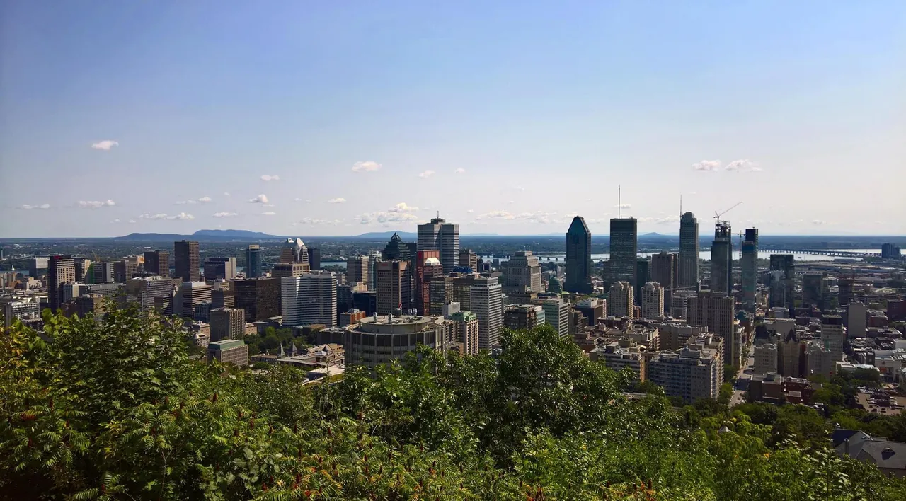
1. Downtown Montréal and the St. Lawrence from Mount Royal ParkAlt: A wide summer view over downtown office towers and the river beyond, with treetops in the foreground under a blue skyAndre Carrotflower · CC BY-SA 4.0 · Commons · 1280×708
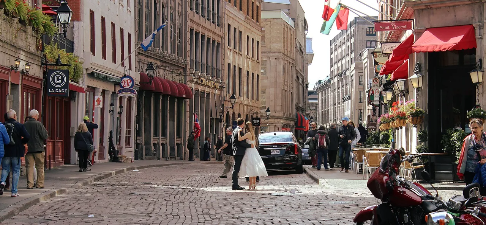
2. Rue Saint-Paul, the oldest street in Old MontréalAlt: A narrow cobbled street of 19th-century stone buildings with flags and awnings, where a bride and groom pose for photosKen Lund · CC BY-SA 2.0 · Commons · 1280×595
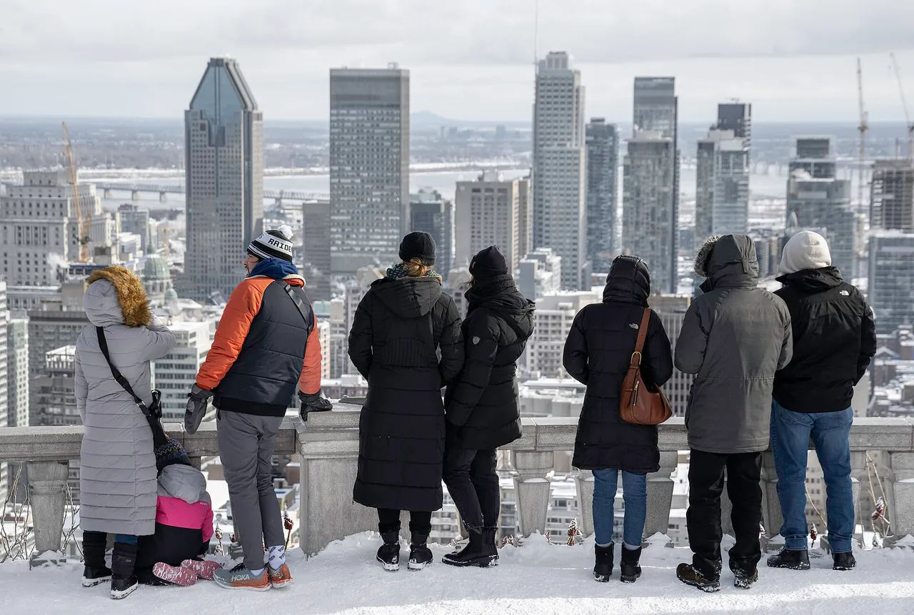
3. A winter afternoon at the Kondiaronk lookout on Mount RoyalAlt: People in heavy winter coats stand at a snowy stone balustrade looking out over downtown towers and the frozen riverWilfredor · CC0 · Commons · 1280×862
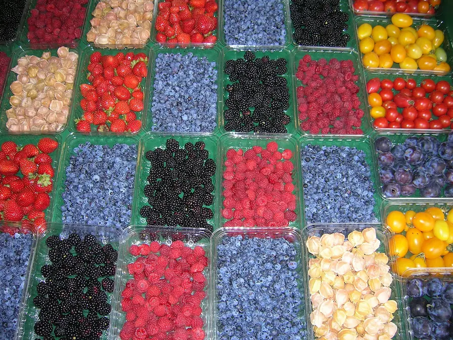
4. Berries and cherry tomatoes at the Jean-Talon MarketAlt: Rows of baskets of raspberries, blueberries, blackberries and cherry tomatoes on a market stallNiranjan Arminius · CC BY-SA 4.0 · Commons · 896×672
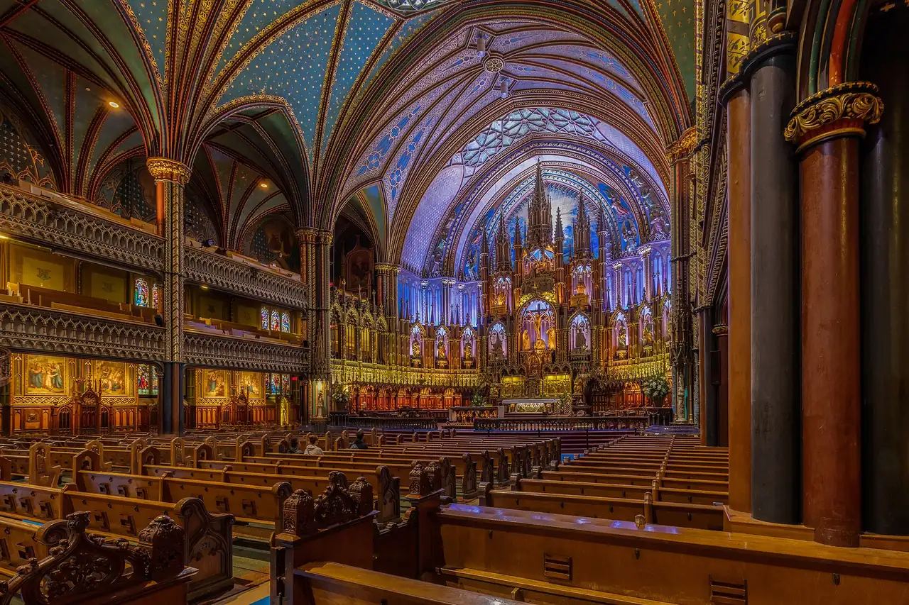
5. The blue and gold interior of Notre-Dame Basilica in Old MontréalAlt: A Gothic Revival church interior with a deep blue starred vault, rows of wooden pews and an ornate gilded altarDiego Delso · CC BY-SA 4.0 · Commons · 1280×853
Toronto toronto
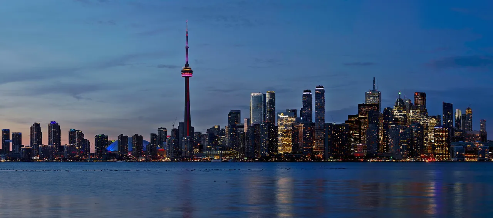
1. The Toronto skyline and CN Tower at dusk from the Toronto IslandsAlt: A city skyline with a tall needle-like tower, lit up at dusk across calm waterJchmrt · CC BY-SA 4.0 · Commons · 1280×568
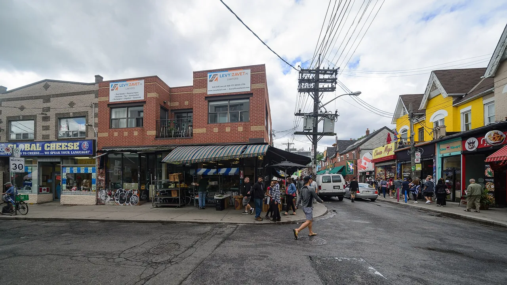
2. A street corner in Kensington MarketAlt: Low brick shops with awnings and signs on a busy street corner under overhead wiresArild Vågen · CC BY-SA 4.0 · Commons · 1280×720
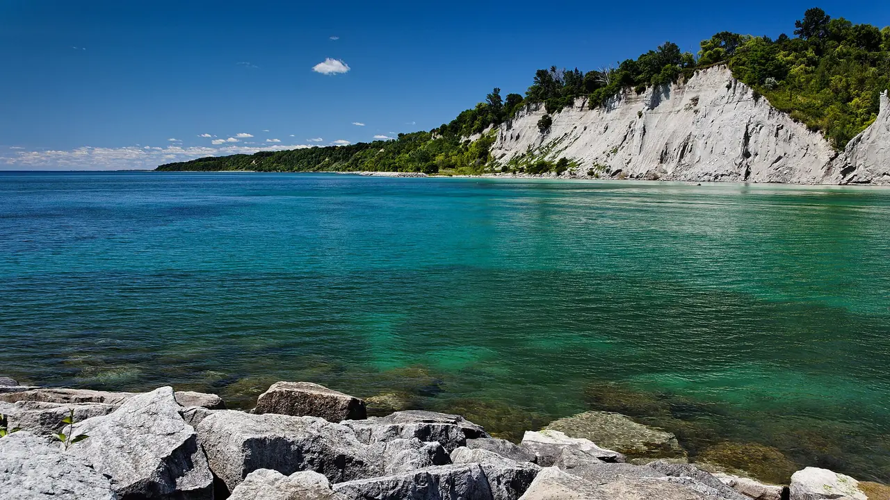
3. The Scarborough Bluffs above Lake OntarioAlt: Tall white clay cliffs topped with trees above clear green lake water and a rocky shoreBenson Kua · CC BY-SA 2.0 · Commons · 1280×720
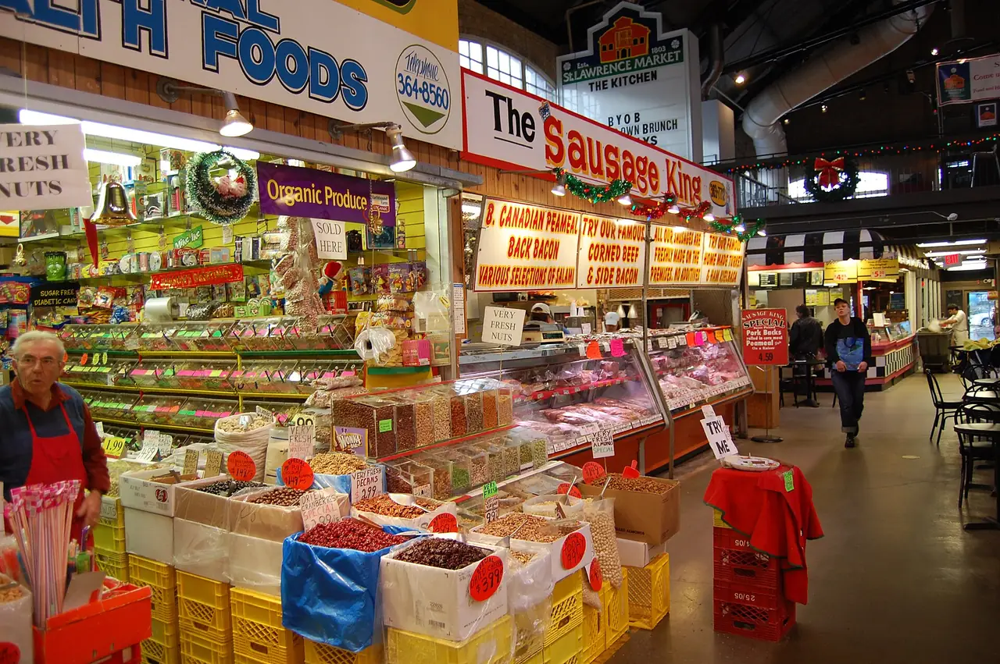
4. Deli and meat counters inside St. Lawrence MarketAlt: A crowded market hall of brightly signed food counters stacked with produce and preservesstu_spivack · CC BY-SA 2.0 · Commons · 1280×851
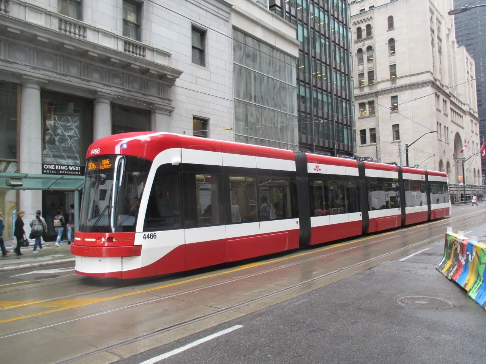
5. A streetcar on King Street at Yonge, downtownAlt: A modern red and white streetcar on a downtown street lined with stone office buildingsTheTrolleyPole · CC BY-SA 4.0 · Commons · 1280×960
Vancouver vancouver
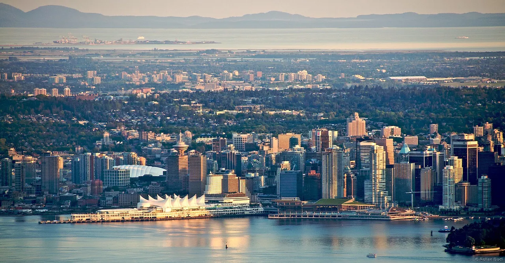
1. Downtown Vancouver, Canada Place and the harbour from Grouse MountainAlt: A long view down over a forested city and a peninsula of towers on the water, with the sail-roofed Canada Place in frontRollan Budi · CC BY-SA 2.0 · Commons · 1280×668
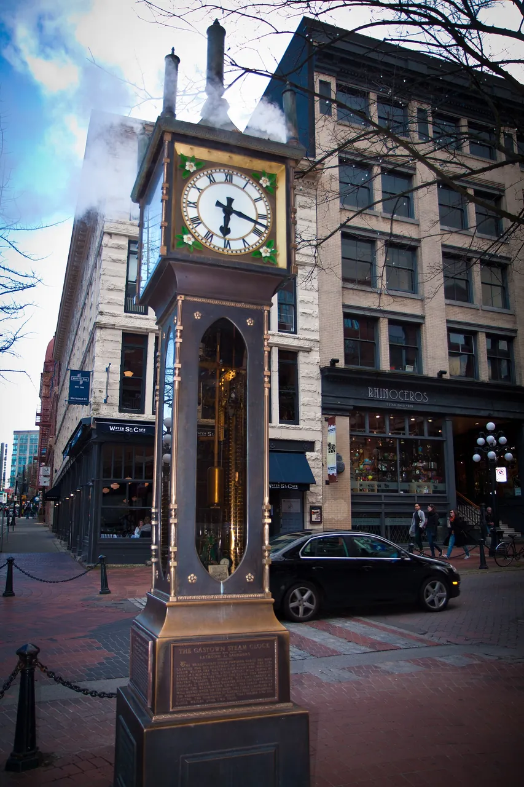
2. The steam clock in Gastown, the city's oldest neighbourhoodAlt: An ornate bronze clock on a pillar on a brick-paved street of old red-brick buildingsAbhinaba Basu · CC BY 2.0 · Commons · 853×1280
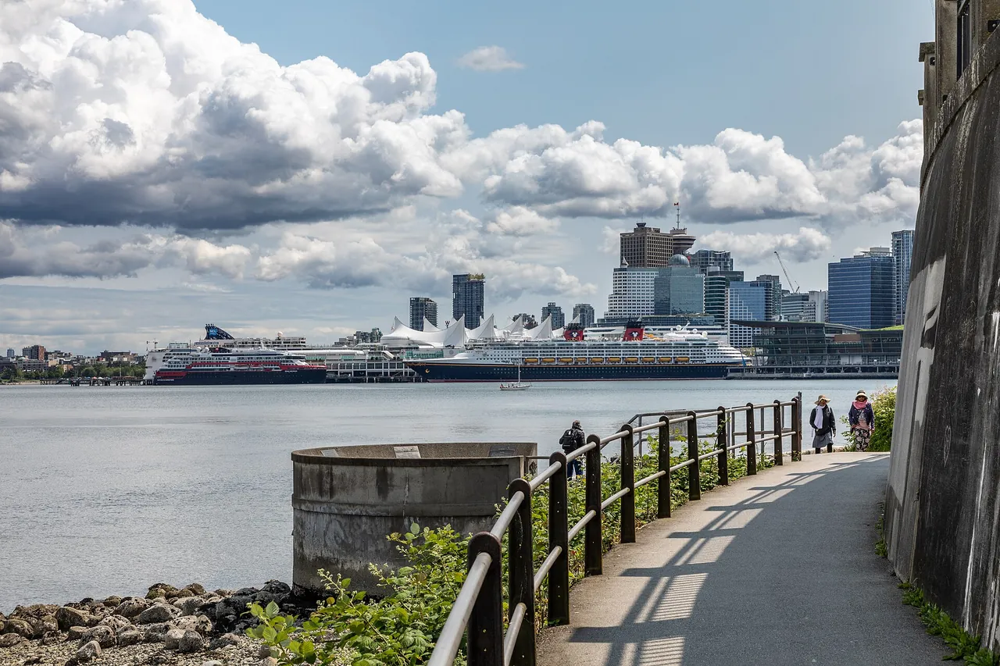
3. The Stanley Park seawall path, looking toward Canada PlaceAlt: A paved waterside path with a railing curving along the shore toward a harbour with cruise ships and downtown towersDietmar Rabich · CC BY-SA 4.0 · Commons · 1280×853
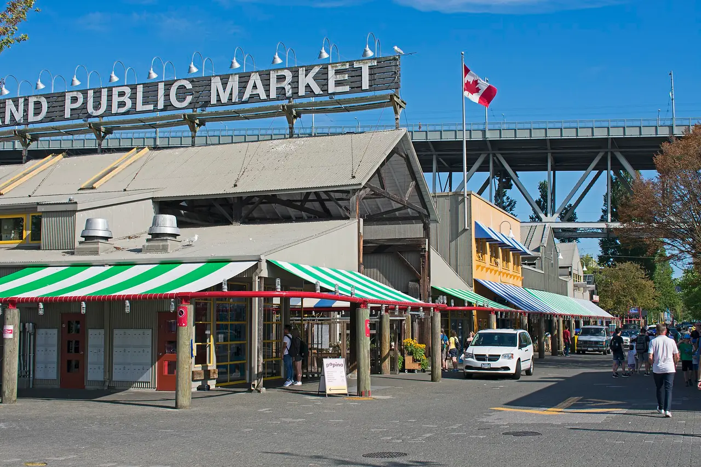
4. The Granville Island Public Market under the Granville Street BridgeAlt: A market building with striped awnings and a Public Market sign beneath the steel trusses of a bridgeYmblanter · CC BY-SA 4.0 · Commons · 1280×853
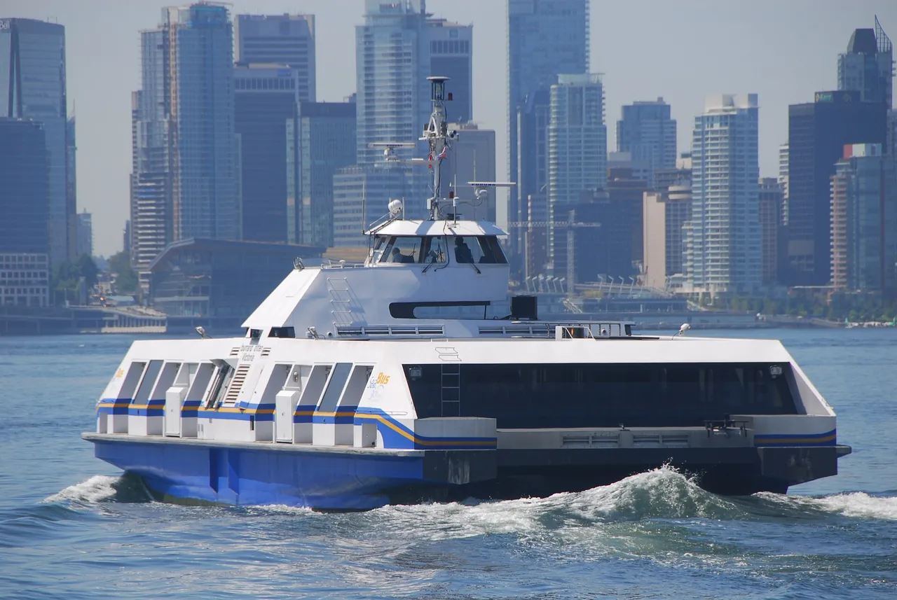
5. A SeaBus crossing Burrard Inlet to downtownAlt: A white and blue passenger ferry speeding across a harbour in front of downtown glass towersAlasdair McLellan · CC BY-SA 3.0 · Commons · 1280×857
.jpg){kind=link}
.jpg){kind=link}


,_Stanley_Park,_Stanley_Park_Seawall_Path_--_2022_--_2056.jpg){kind=link}